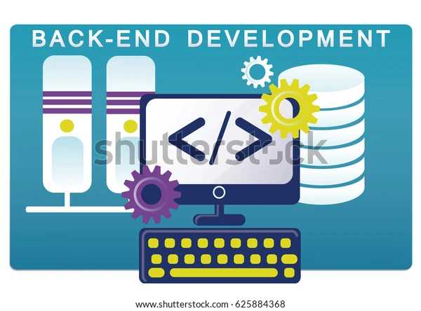

Wir bietet Kunden die Möglichkeit, den Übungsplatz auch außerhalb der Betriebszeiten zu nutzen, um ihre Fähigkeiten im Einparken oder Reversieren in einem gegebenen Setting zu verbessern.
Der Zugang zum Übungsplatz erfolgt über eine Schranke, die mit einem NFC-Code Touch ausgestattet ist.
Bitte nutzen Sie die folgenden Funktionen der Webseite, um die Kundenverwaltung effizient durchzuführen:
Autoren: Paul Schaffer & Robert Covaci
Kontakt:
paul.schaffer@sz-ybbs.ac.at

robert.covaci@sz-ybbs.ac.at